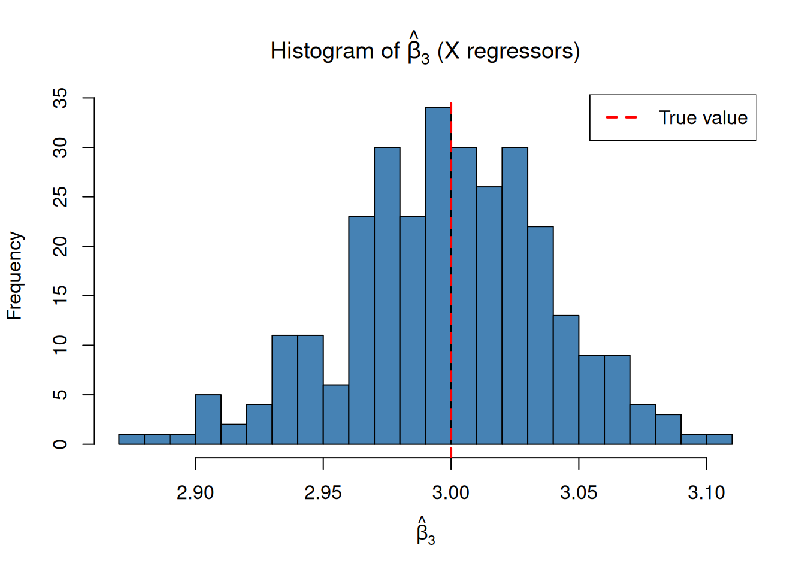
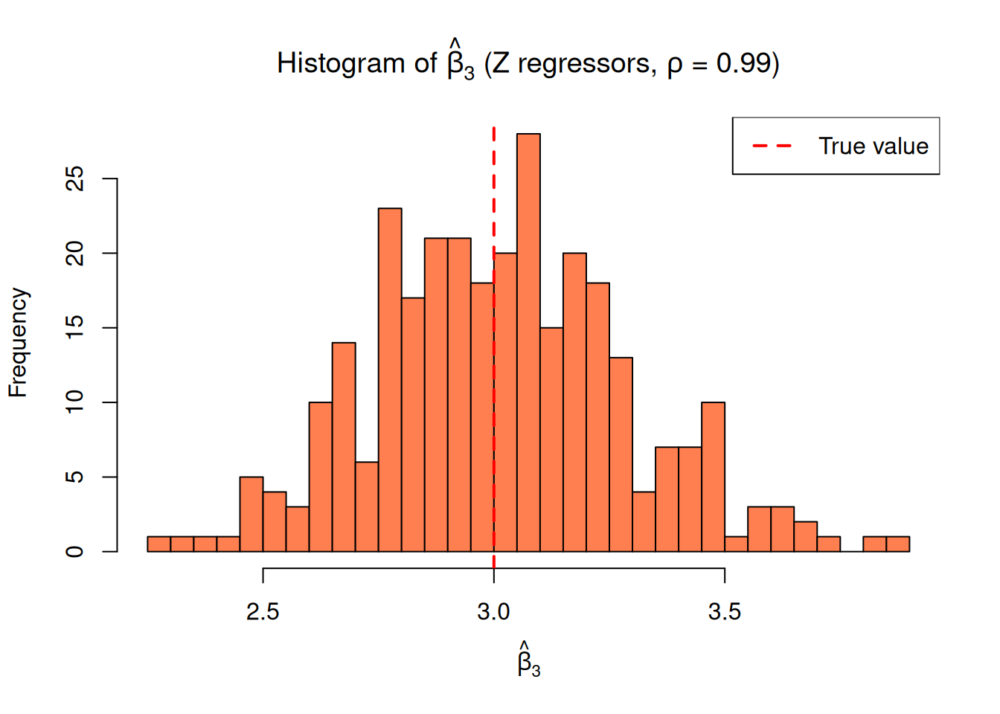

library(tidyverse)STAT151A Homework 2 (multilinear regression and coding).
1 Bad coding
Suppose you work at Spotify, and a colleague told you that high energy songs are the most popular. You asked for their code, and this is what they sent you. The dataset they load refers to the Spotify dataset found here.
data_location <- "datasets"
df <- read.csv(file.path(data_location, "spotify_songs.csv"))
# run analysis
xx <- df[,c(4,12,13,14,15,16,17,18,19,20,21,22,23)]; xxx =df[,4]
z=sum((xx[,1]-sum(xx[,1])/nrow(xx))*(xx[,2]-sum(xx[,2])/nrow(xx)))/t(xx[,2]-sum(xx[,2])/nrow(xx))%*%(xx[,2] - sum(xx[,2])/nrow(xx))
z2=sum((xx[,1]-sum(xx[,1])/nrow(xx))* (xx[,3]-sum(xx[,3])/nrow(xx)))/t(xx[,3]-sum(xx[,3])/nrow(xx))%*%(xx[,3] - sum(xx[,3])/nrow(xx))
z3=sum((xx[,1]-sum(xx[,1])/nrow(xx))*(xx[,4]-sum(xx[,4])/nrow(xx)))/t(xx[,4]-sum(xx[,4])/nrow(xx))%*%(xx[,4]-sum(xx[,4])/nrow(xx))
z4<-sum((xx[,1]-sum(xx[,1])/nrow(xx))*(xx[,5]-sum(xx[,5])/nrow(xx)))/t(xx[,5]-sum(xx[,5])/nrow(xx))%*%(xx[,5]-sum(xx[,5])/nrow(xx))
z5<-sum((xx[,1]-sum(xx[,1])/nrow(xx))*(xx[,6]-sum(xx[,5])/nrow(xx)))/t(xx[,6]-sum(xx[,6])/nrow(xx))%*%(xx[,6]-sum(xx[,6])/nrow(xx))
z6<-sum((xx[,1]-sum(xx[,1])/nrow(xx))*(xx[,7]-sum(xx[,7])/nrow(xx)))/t(xx[,7]-sum(xx[,2])/nrow(xx))%*%(xx[,7]- sum(xx[,7])/nrow(xx))
z7<-sum((xx[,1]-sum(xx[,1])/nrow(xx))*(xx[,8]-sum(xx[,8])/nrow(xx)))/t(xx[,8]-sum(xx[,8])/nrow(xx))%*%(xx[,8]- sum(xx[,8])/nrow(xx))
z8<-sum((xx[,1]-sum(xx[,1])/nrow(xx))*(xx[,9]-sum(xx[,9])/nrow(xx)))/t(xx[,9]-sum(xx[,9])/nrow(xxx))%*%(xx[,9]- sum(xx[,9])/nrow(xx))
z9<-sum((xx[,1]-sum(xx[,1])/nrow(xx))*(xx[,10]-sum(xx[,10])/nrow(xx)))/t(xx[,10]-sum(xx[,10])/nrow(xxx))%*%(xx[,10] -sum(xx[,10])/nrow(xx))
z10 <- sum((xx[,1]-sum(xx[,1])/nrow(xx))*(xx[,11]-sum(xx[,11])/nrow(xx)))/t(xx[,11]-sum(xx[,11])/nrow(xxx))%*%(xx[,11] -sum(xx[,11])/nrow(xx))
z11 <- sum((xx[,1]-sum(xx[,1])/nrow(xx))*(xx[,12]-sum(xx[,12])/nrow(xx)))/t(xx[,12]-sum(xx[,12])/nrow(xx))%*%(xx[,12] -sum(xx[,12])/nrow(xx))
yy=(names(df)[c(12,13,14,15,16,17,17,19,20,21,22,23)][order(c(z, z2,z3,z4, z5, z6, z7, z8, z9, z10,z11))][1])
print(sprintf("The best is %s",yy))- What statistical technique did they use to attempt to answer this question?
- Did they make any mistakes?
- Is it easy to read and think critically about their analysis?
- Would it be easy to re-run their analysis with a slightly different method or dataset?
- Write, in R, a better version of the same analysis that is error-free, more readable, and more reusable.
2 Question 2: Simulations
For this problem, we will simulate data from a linear regression and confirm some of our mathematical results.
Define the following quantities and their corresponding R variables:
- \(N\): The number of observations
- \(\sigma\): The residual standard deviation
- \(\boldsymbol{\beta}\): A \(3\)–dimensional regression coefficient
- \(\rho\): A correlation between \(-1\) and \(1\)
We will assume that:
- \(x_{n1}\) is normal with mean \(0\) and variance \(1\),
- \(x_{n2}\) is normal with mean \(0\) and variance \(1\),
- \(z_{n1} = \rho x_{n1} + \sqrt{1 - \rho^2} x_{n2}\)
- \(z_{n2} = x_{n1}\)
- The regressor rows are independent of one another (\(x_{n1}\) and \(x_{n2}\) are independent of \(x_{m1}\) and \(x_{m2}\) for \(m \ne n\)),
- The residuals \(\varepsilon_n\) are IID normal with mean \(0\) and variance \(\sigma^2\), indepenent of all regressors, and
- For each \(n\), \(y_n = \boldsymbol{x}_n^\intercal\boldsymbol{\beta}+ \varepsilon_n\).
(a)
Write a function to generate regressors \(\boldsymbol{x}_{n1}\), \(\boldsymbol{x}_{n2}\) give \(N\). Then, write a function that generates and returns \(y_n\) and \(\varepsilon_n\) given the regressors, \(\sigma\), \(\boldsymbol{\beta}\). You may use the functions rnorm which generates standard normal random variables.
(b)
For the regression \(y\sim 1 + x_1 + x_2\), construct the \(\boldsymbol{X}\) matrix and \(\boldsymbol{Y}\) matrix. Write a function that takes in \(\boldsymbol{X}\) and \(\boldsymbol{Y}\) and computes the OLS estimator \(\hat{\boldsymbol{\beta}}\).
Do not use the lm function — use only matrix operations solve(), t(), and %*%. Your function may assume that \(\boldsymbol{X}\) is full column rank.
(c)
Run the regression from (b) using lm and confirm that you get the same estimate for \(\hat{\boldsymbol{\beta}}\).
(d)
Write a function that takes in the \(\boldsymbol{X}\) matrix and \(\rho\) and returns a \(\boldsymbol{Z}\) matrix for the regression \(y\sim 1 + z_1 + z_2\).
(e)
Analytically derive expressions for \(\mathrm{Var}\left(z_{n1}\right)\), \(\mathrm{Var}\left(z_{n2}\right)\), and \(\mathrm{Cov}\left(z_{n1}, z_{n2}\right)\). Using a simulation in R, check that your calculations are correct for a range of different \(\rho\).
(f)
Using the above code you have written, please simulate data of the form \(y_n = \boldsymbol{\beta}^\intercal\boldsymbol{x}_n + \varepsilon_n\) where
- \(N = 5000\)
- \(\sigma = 3\)
- \(\boldsymbol{\beta}= (1, 2, 3)^\intercal\).
For each of 300 simulations, estimate \(\hat{\boldsymbol{\beta}}_3\). Plot the histogram of \(\hat{\boldsymbol{\beta}}_3\) across simulations. Is it centered at the true value? How variable is it?
(g)
Now repeat (f), but simulate data of the form \(y_n = \boldsymbol{\beta}^\intercal\boldsymbol{z}_n + \varepsilon_n\), where \(\rho = 0.99\), and all other variables are the same. Again plot the histogram of \(\hat{\boldsymbol{\beta}}_3\) across simulations. How is it similar to the result from (f)? How is it different?
Solutions
3 Question 1
- They ran simple linear regression with an intercept and tried to find the largest coefficient.
- Yes, several. The sorting is incorrect. The slopes are not invariant to the scale of the regressor. There is an index error in
z6. (There may be others.) - It is very difficult to read and understand what they did, much less discover the mistakes.
- No, a slight change in the column order or meaning would invalidate the whole analysis.
Better code:
Here is an example of better code (but not necessarily better analysis). We will grade flexibly, there are many different ways you can do this.
# What matters most for popularity? Explore this question with linear regression.
# Regress track_popularity ~ regressor + 1 for each regressor.
regressors <- c("danceability", "energy", "loudness", "speechiness",
"acousticness", "instrumentalness", "liveness", "tempo")
# Check that all regressors are present
stopifnot(all(regressors %in% names(df)))# Run a univariate regression y ~ x + 1 and return the coefficient for x.
#
# Arguments:
# - regressor: The name of a column in the data frame `df` to use as x
# - response: The name of a column in the data frame `df` to use as y
# - df: A dataframe containing the data to analyze.
#
# Returns:
# - The estimate of the coefficient of x in the regression y ~ x + 1.
RunRegression <- function(regressor, response, dataframe) {
stopifnot(regressor %in% names(dataframe))
stopifnot(response %in% names(dataframe))
x <- df[[regressor]] # Regressor
y <- df[[response]] # Response
# Subtract the means to account for regression on a constant
x_centered <- x - mean(x)
y_centered <- y - mean(y)
# Regression estimate using the standard OLS forumula
betahat <- mean(x_centered * y_centered) / mean(x_centered^2)
return(betahat)
}# Run the regression for each regressor.
results <- data.frame()
for (regressor in regressors) {
betahat <- RunRegression(
regressor=regressor, response="track_popularity", dataframe=df)
result <- data.frame(regressor=regressor, betahat=betahat)
results <- bind_rows(results, result)
}# Sort by the regression coefficient and summarize the results.
results <- arrange(results, desc(betahat))
print(results)
print(sprintf("%s is the regressor with the largest track popularity coefficient.",
results[1, "regressor"]))4 Question 2
(a)
# Generate regressors x1 and x2, both standard normal
GenerateRegressors <- function(n_obs) {
x1 <- rnorm(n_obs, mean = 0, sd = 1)
x2 <- rnorm(n_obs, mean = 0, sd = 1)
return(data.frame(x1 = x1, x2 = x2))
}
# Generate y and epsilon given regressors, sigma, and beta
GenerateResponse <- function(x_df, sigma, beta) {
n_obs <- nrow(x_df)
# Construct the X matrix with intercept
X <- cbind(1, x_df$x1, x_df$x2)
# Generate residuals
eps <- rnorm(n_obs, mean = 0, sd = sigma)
# Compute y = X %*% beta + eps
y <- X %*% beta + eps
return(list(y = as.vector(y), eps = eps))
}
# Test the functions
set.seed(123)
x_df <- GenerateRegressors(n_obs = 100)
result <- GenerateResponse(x_df, sigma = 3, beta = c(1, 2, 3))
head(data.frame(x1 = x_df$x1, x2 = x_df$x2, y = result$y, eps = result$eps)) x1 x2 y eps
1 -0.56047565 -0.71040656 4.344260 6.5964310
2 -0.23017749 0.25688371 5.247535 3.9372389
3 1.55870831 -0.24669188 2.581906 -0.7954352
4 0.07050839 -0.34754260 1.727971 1.6295822
5 0.12928774 -0.95161857 -2.839300 -1.2430198
6 1.71506499 -0.04502772 2.866306 -1.4287407(b)
# OLS estimator using matrix operations
ComputeOLS <- function(X, Y) {
# betahat = (X'X)^{-1} X'Y
betahat <- solve(t(X) %*% X, t(X) %*% Y)
return(as.vector(betahat))
}
# Generate data and construct matrices
set.seed(456)
n_obs <- 5000
sigma <- 3
beta_true <- c(1, 2, 3)
x_df <- GenerateRegressors(n_obs)
result <- GenerateResponse(x_df, sigma, beta_true)
# Construct X matrix (with intercept) and Y vector
X <- cbind(1, x_df$x1, x_df$x2)
Y <- result$y
# Compute OLS estimate
betahat <- ComputeOLS(X, Y)
print(betahat)[1] 1.011402 1.978874 3.065067(c)
# Confirm using lm
df <- bind_cols(x_df, result)
lm_fit <- lm(y ~ 1 + x1 + x2, data = df)
coef(lm_fit)(Intercept) x1 x2
1.011402 1.978874 3.065067 The estimates from our OLS function match those from lm.
(d)
# Construct Z matrix from X matrix and rho
ConstructZMatrix <- function(X, rho) {
# X has columns: intercept, x1, x2
x1 <- X[, 2]
x2 <- X[, 3]
# z1 = rho * x1 + sqrt(1 - rho^2) * x2
# z2 = x1
z1 <- rho * x1 + sqrt(1 - rho^2) * x2
z2 <- x1
# Return Z matrix with intercept
Z <- cbind(1, z1, z2)
return(Z)
}
# Test the function
Z <- ConstructZMatrix(X, rho = 0.5)
head(Z) z1 z2
[1,] 1 -1.01593374 -1.3435214
[2,] 1 -0.19864307 0.6217756
[3,] 1 0.44452134 0.8008747
[4,] 1 -0.68154051 -1.3888924
[5,] 1 0.03662366 -0.7143569
[6,] 1 0.30891542 -0.3240611(e)
Analytically:
- \(\mathrm{Var}\left(z_{n1}\right) = \mathrm{Var}\left(\rho x_{n1} + \sqrt{1-\rho^2} x_{n2}\right) = \rho^2 \mathrm{Var}\left(x_{n1}\right) + (1-\rho^2) \mathrm{Var}\left(x_{n2}\right) = \rho^2 + (1-\rho^2) = 1\)
- \(\mathrm{Var}\left(z_{n2}\right) = \mathrm{Var}\left(x_{n1}\right) = 1\)
- \(\mathrm{Cov}\left(z_{n1}, z_{n2}\right) = \mathrm{Cov}\left(\rho x_{n1} + \sqrt{1-\rho^2} x_{n2}, x_{n1}\right) = \rho \mathrm{Var}\left(x_{n1}\right) + \sqrt{1-\rho^2} \cdot 0 = \rho\)
# Verify with simulation for different values of rho
rho_values <- c(0, 0.3, 0.6, 0.9, 0.99)
n_sim <- 10000
cat("Checking variance and covariance formulas:\n\n")Checking variance and covariance formulas:for (rho in rho_values) {
x1 <- rnorm(n_sim)
x2 <- rnorm(n_sim)
z1 <- rho * x1 + sqrt(1 - rho^2) * x2
z2 <- x1
cat(sprintf("rho = %.2f:\n", rho))
cat(sprintf(" Var(z1): simulated = %.4f, theoretical = 1\n", var(z1)))
cat(sprintf(" Var(z2): simulated = %.4f, theoretical = 1\n", var(z2)))
cat(sprintf(" Cov(z1,z2): simulated = %.4f, theoretical = %.4f\n\n",
cov(z1, z2), rho))
}rho = 0.00:
Var(z1): simulated = 1.0150, theoretical = 1
Var(z2): simulated = 1.0208, theoretical = 1
Cov(z1,z2): simulated = -0.0046, theoretical = 0.0000
rho = 0.30:
Var(z1): simulated = 1.0023, theoretical = 1
Var(z2): simulated = 1.0233, theoretical = 1
Cov(z1,z2): simulated = 0.3152, theoretical = 0.3000
rho = 0.60:
Var(z1): simulated = 1.0119, theoretical = 1
Var(z2): simulated = 1.0162, theoretical = 1
Cov(z1,z2): simulated = 0.6102, theoretical = 0.6000
rho = 0.90:
Var(z1): simulated = 1.0435, theoretical = 1
Var(z2): simulated = 1.0459, theoretical = 1
Cov(z1,z2): simulated = 0.9453, theoretical = 0.9000
rho = 0.99:
Var(z1): simulated = 1.0064, theoretical = 1
Var(z2): simulated = 1.0068, theoretical = 1
Cov(z1,z2): simulated = 0.9964, theoretical = 0.9900(f)
# Simulation parameters
n_obs <- 5000
sigma <- 3
beta_true <- c(1, 2, 3)
n_sims <- 300
# Store beta3_hat from each simulation
beta3_estimates <- numeric(n_sims)
set.seed(789)
for (i in 1:n_sims) {
# Generate data
x_df <- GenerateRegressors(n_obs)
result <- GenerateResponse(x_df, sigma, beta_true)
# Construct X and Y
X <- cbind(1, x_df$x1, x_df$x2)
Y <- result$y
# Estimate beta
betahat <- ComputeOLS(X, Y)
beta3_estimates[i] <- betahat[3]
}
# Plot histogram
hist(beta3_estimates, breaks = 30, col = "steelblue",
main = expression(paste("Histogram of ", hat(beta)[3], " (X regressors)")),
xlab = expression(hat(beta)[3]))
abline(v = beta_true[3], col = "red", lwd = 2, lty = 2)
legend("topright", legend = c("True value"), col = "red", lty = 2, lwd = 2)
cat(sprintf("Mean of beta3_hat: %.4f (true value: %d)\n", mean(beta3_estimates), beta_true[3]))Mean of beta3_hat: 2.9983 (true value: 3)cat(sprintf("SD of beta3_hat: %.4f\n", sd(beta3_estimates)))SD of beta3_hat: 0.0397The histogram is centered at the true value \(\beta_3 = 3\), confirming that OLS is unbiased. The standard deviation is approximately 0.0397.
(g)
# Same simulation but with Z regressors and rho = 0.99
rho <- 0.99
beta3_estimates_z <- numeric(n_sims)
set.seed(789)
for (i in 1:n_sims) {
# Generate X regressors first
x_df <- GenerateRegressors(n_obs)
X <- cbind(1, x_df$x1, x_df$x2)
# Construct Z matrix
Z <- ConstructZMatrix(X, rho)
# Generate response using Z regressors: y = Z %*% beta + eps
eps <- rnorm(n_obs, mean = 0, sd = sigma)
Y <- Z %*% beta_true + eps
# Estimate beta using Z
betahat <- ComputeOLS(Z, Y)
beta3_estimates_z[i] <- betahat[3]
}
# Plot histogram
hist(beta3_estimates_z, breaks = 30, col = "coral",
main = expression(paste("Histogram of ", hat(beta)[3], " (Z regressors, ", rho, " = 0.99)")),
xlab = expression(hat(beta)[3]))
abline(v = beta_true[3], col = "red", lwd = 2, lty = 2)
legend("topright", legend = c("True value"), col = "red", lty = 2, lwd = 2)
cat(sprintf("Mean of beta3_hat: %.4f (true value: %d)\n", mean(beta3_estimates_z), beta_true[3]))Mean of beta3_hat: 3.0145 (true value: 3)cat(sprintf("SD of beta3_hat: %.4f\n", sd(beta3_estimates_z)))SD of beta3_hat: 0.2778Comparison:
Similarity: Both histograms are centered at the true value \(\beta_3 = 3\), confirming that OLS remains unbiased regardless of the regressor correlation structure.
Difference: The histogram for the Z regressors with \(\rho = 0.99\) has much higher variance than the X regressor case. This is because \(\mathrm{Cov}\left(z_1, z_2\right) = \rho = 0.99\), meaning \(z_1\) and \(z_2\) are highly correlated (multicollinear). When regressors are nearly collinear, it becomes difficult to separately identify their individual effects, leading to inflated variance in the coefficient estimates. This illustrates how multicollinearity increases the uncertainty in OLS estimates even though the estimator remains unbiased.